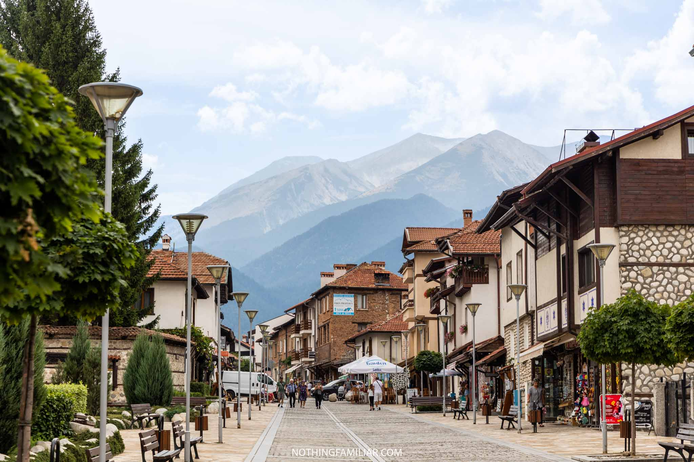
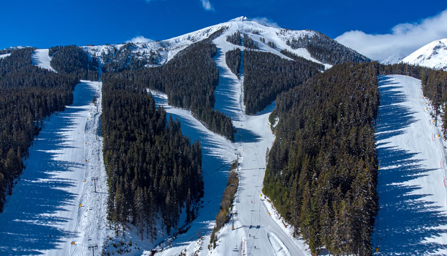
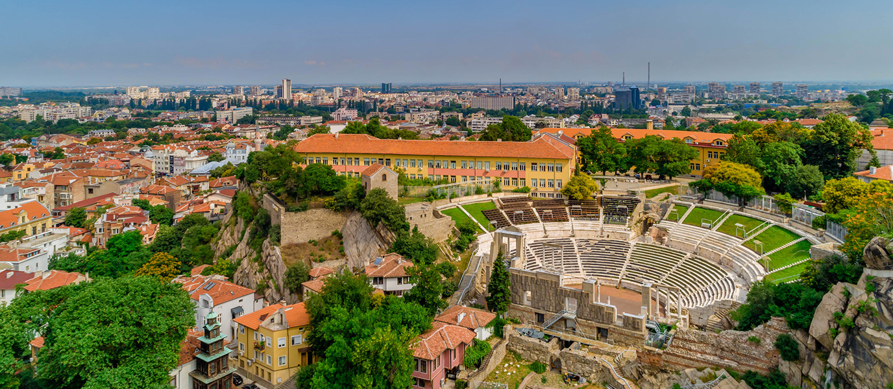
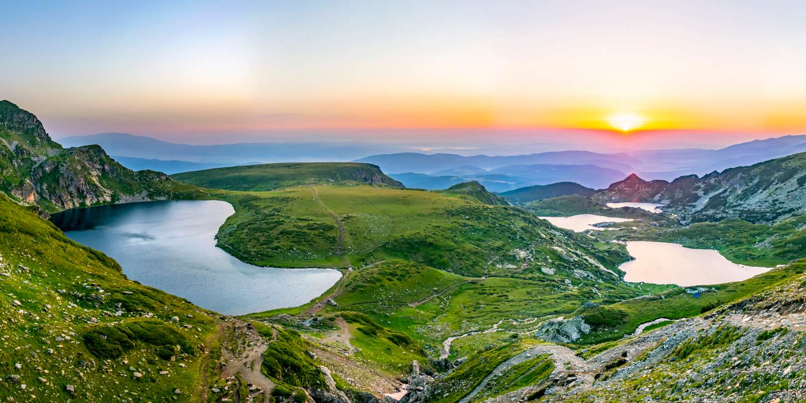
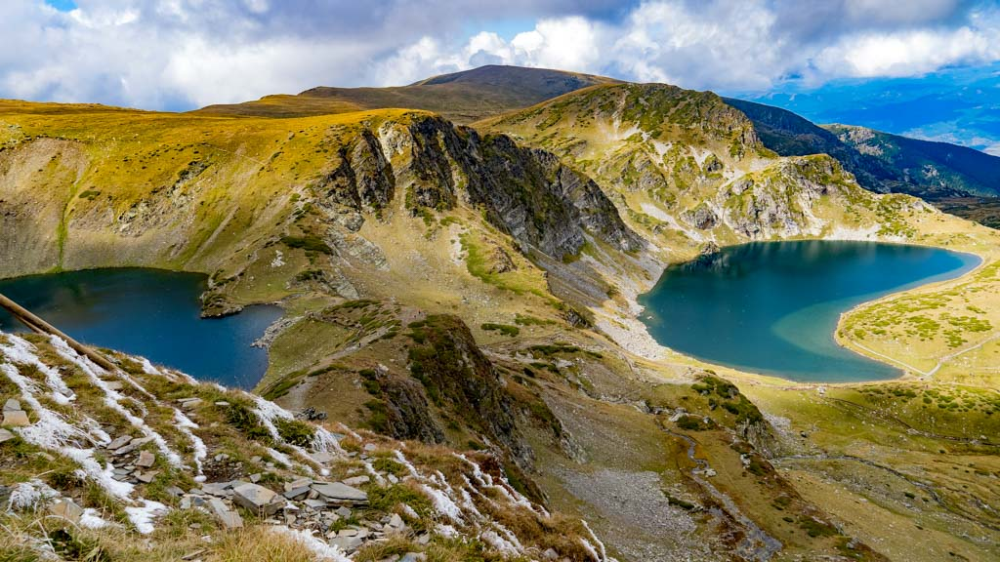
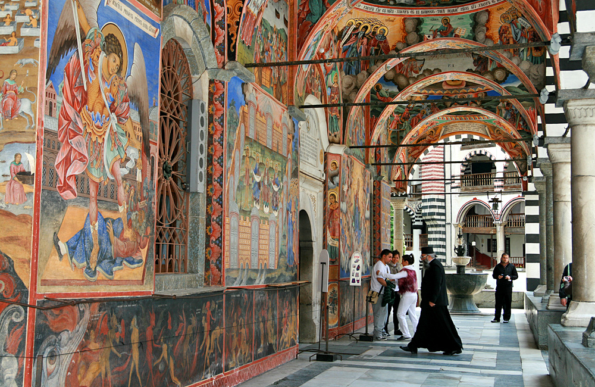
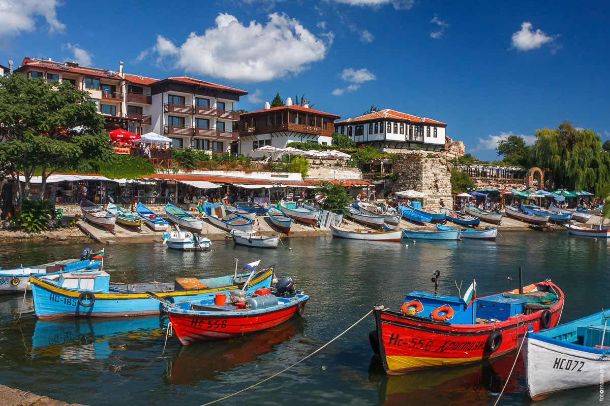
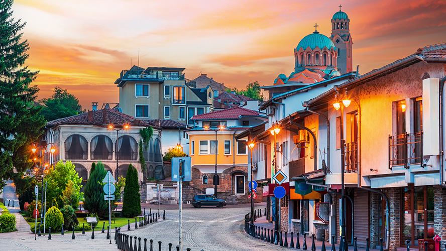
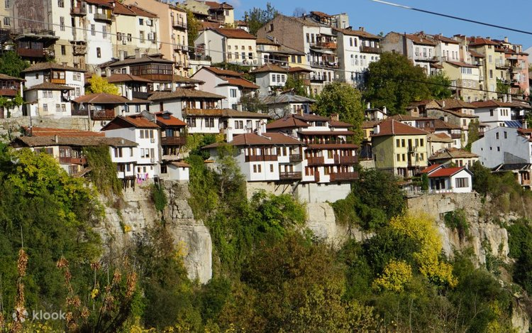

Bansko


Nestled at the foot of the majestic Pirin Mountains, Bansko is a charming town where tradition meets adventure. Cobblestone streets,
old stone houses, and cozy taverns showcase its rich cultural heritage, while world-class ski slopes and mountain trails beckon
thrill-seekers. In winter, snow-capped peaks transform Bansko into a magical alpine wonderland; in summer, lush meadows and crisp
mountain air create a serene escape. Whether you’re exploring its historic streets or embracing outdoor adventures, Bansko captures
the heart of Bulgaria’s natural beauty and timeless charm.
Best time to visit:
Winter for skiing (December–March); summer for hiking and mountain scenery (June–September). Early mornings for slopes or trails are ideal to
avoid crowds.
Opening hours:
Ski lifts usually operate from 8:30–16:30 in winter; hiking trails are accessible all day in summer.
Entry:
Ski slopes require lift tickets (€20–€50 per day depending on season); hiking and town exploration are free.
SEE MAP
Plovdiv Old Town


Step into a living mosaic of history in Plovdiv Old Town, where cobblestone streets wind past colorful 19th-century houses,
ancient Roman theaters, and charming art galleries. Every corner whispers stories from Thracian, Roman, Byzantine, and Ottoman times,
blending layers of culture into a picturesque whole. With its vibrant cafés, quaint shops, and panoramic views from the hills, Plovdiv
Old Town invites visitors to wander, linger, and soak in the timeless charm of one of Bulgaria’s most enchanting cities.
Best time to visit:
Spring (April–June) and early autumn (September–October) for mild temperatures and fewer crowds.
Opening hours:
Open all day for strolling; museums and historical houses usually 9:00–18:00.
Entry:
Walking around the Old Town is free; entrance fees for museums and the Ancient Theatre range from €2–€5.
SEE MAP
Seven Rila Lakes


Hidden high in the Rila Mountains, the Seven Rila Lakes form a breathtaking natural masterpiece that feels like stepping into a
fairytale. Each glacial lake has its own unique shape and character, surrounded by rugged peaks, alpine meadows, and crystal-clear
waters that reflect the sky like mirrors. Hiking trails connect these serene gems, offering panoramic views and moments of quiet
reflection. A visit to the Seven Rila Lakes is more than a hike—it’s an immersion into Bulgaria’s pristine wilderness, where nature’s
beauty enchants every traveler.
Best time to visit:
Late spring to early autumn (June–September) for clear trails, mild temperatures, and fully thawed lakes. Early morning or late afternoon is best
for fewer crowds and soft light for photos.
Opening hours:
Open all day, hiking trails usually accessible from around 7:00–19:00, depending on season.
Entry:
Free to visit, cable car to the starting point of the hike costs around €10–€15.
SEE MAP
Rila Monastery


Hidden in the serene Rila Mountains, this jewel of Bulgarian heritage is a sanctuary of faith, art, and history. Its colorful frescoes,
intricate wood carvings, and grandiose architecture tell stories of centuries past, while the surrounding pine forests and mountain
peaks create a peaceful, almost magical setting. Walking through its cloisters and chapels, visitors feel the harmony of spirituality
and nature, making Rila Monastery not just a monument, but a soulful journey into Bulgaria’s heart and soul.
Best time to visit:
Spring and autumn for mild temperatures and fewer crowds. Early morning or late afternoon is ideal for photography and a peaceful visit.
Opening hours:
Open daily, usually from 8:00–17:00. Guided tours may have separate timings.
Entry:
Small entrance fee (around €3–€5) for the museum and monastery complex; main church is free to enter.
SEE MAP
Nessebar


Often called the “Pearl of the Black Sea,” Nessebar is a captivating blend of history, charm, and seaside beauty. Its narrow
cobblestone streets wind past medieval churches, ancient ruins, and traditional wooden houses that tell stories of Thracian, Greek,
and Byzantine civilizations. Nestled on a rocky peninsula, the town overlooks the sparkling waters of the Black Sea, creating a
postcard-perfect scene at every turn. Nessebar invites visitors to wander, explore, and lose themselves in the timeless allure of one
of Bulgaria’s most enchanting coastal gems.
Best time to visit:
Late spring to early autumn (May–September) for sunny weather and pleasant sea breezes. Early morning or evening visits are best to avoid crowds.
Opening hours:
Open year-round; most historical sites and churches are accessible during daylight hours, roughly 8:00–18:00.
Entry:
Entry fees apply for some museums and churches (approx. €1–€5). Walking around the old town and seaside promenade is free.
SEE MAP
Veliko Tarnovo


Perched on dramatic hills above the Yantra River, Veliko Tarnovo is a city that feels straight out of a storybook. Its medieval
fortress, Tsarevets, crowns the skyline with ancient walls, towers, and hidden passageways, echoing tales of Bulgarian kings and
heroes. Strolling through the cobbled streets of the old town, lined with traditional houses and vibrant artisan shops, visitors
are transported through time, discovering the soul of Bulgaria’s history amid breathtaking panoramas. Veliko Tarnovo is more than a
city — it’s a journey into the heart of a nation’s past and its enduring spirit.
Best time to visit:
Spring and autumn for mild temperatures and fewer tourists. Early morning or late afternoon is ideal for photography and exploring the hills.
Opening hours:
Historical sites like Tsarevets Fortress are usually open daily from 9:00–18:00 (longer in summer). Walking through the old town is accessible at all
times.
Entry:
Tsarevets Fortress – small entrance fee (~€5). Most churches and public areas are free.
SEE MAP